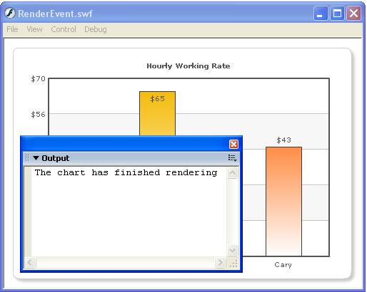

| FusionCharts and Flash > Handling Loading/Rendering Events |
When you're loading a FusionCharts chart inside your Flash movie, you can be notified when the chart has finished rendering. Here, we'll see a simple example, wherein we modify our previous Basic example to track the rendering event. The modified file is saved as RenderEvent.fla. |
| Adding event listeners |
All the charts in FusionCharts suite expose an event rendered once they've finished rendering. You can create your listener objects to listen to this event, using the following code: |
//Create a listener object to listen to the rendered event of the chart
var objL:Object = new Object();
objL.rendered = function(){
trace("The chart has finished rendering");
}
//Register the object with the chart
myFirstChart.addEventListener("rendered", objL); |
Here, we've created a listener object and associated it with the chart's instance (myFirstChart) . For the sake of demonstration, we just trace out a message whenever the chart has rendered. When you run this code, you'll see the following results: |
|  |